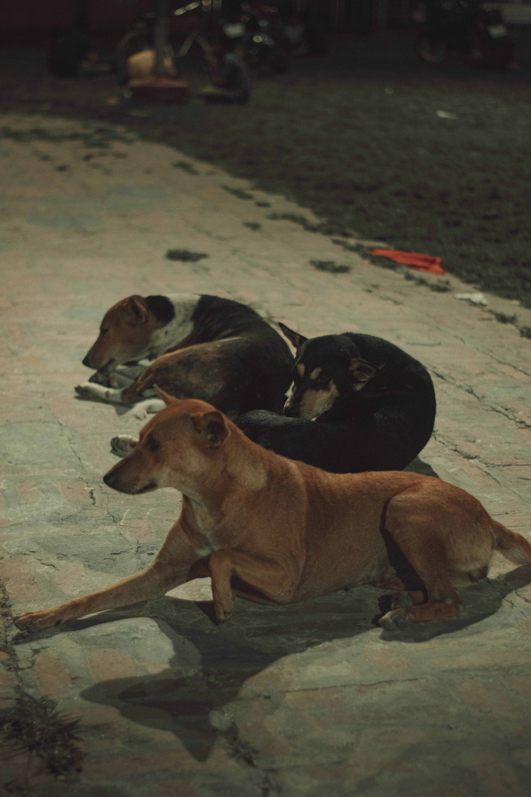
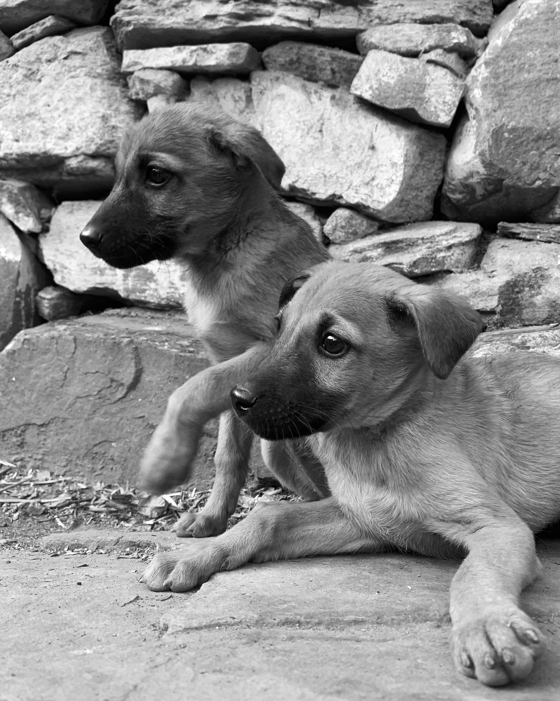
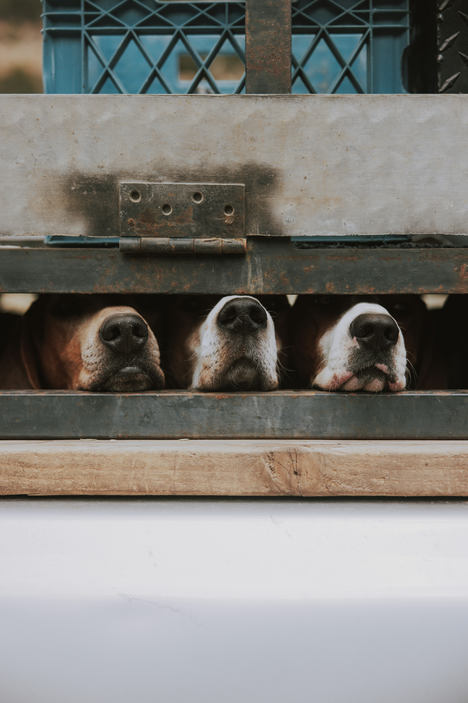

At Happy Tails, our mission is simple: to save the lives of dogs in need and provide them with loving, forever homes. We believe that every dog deserves a second chance, no matter their age, breed, or background.

Rescuing Dogs in Need
These brave dogs were saved after living alone on the streets. Now, they rest safely in our care, waiting for new families.

Building Loving Families
These little pups were found cold and scared. Today, they have a warm bed and loving family they'd been dreaming of.

Spreading Compassion
Behind every fence are hearts full of hope. We fight every day to free dogs like these and give them a second chance.
We are committed to:
Rescuing Dogs: We focus on dogs from shelters, strays, and those in need of urgent care. By providing them with a safe space, medical treatment, and plenty of love, we give them the chance to heal and find a family.
Connecting Families: Through our adoption process, we match families with dogs that best suit their lifestyle, ensuring a happy life for both pet and owner. We guide you through every step of the journey—from adoption to settling in your new home.
Promoting Responsible Pet Ownership: We believe in the importance of educating our community about responsible pet ownership. Our efforts focus on awareness, training, and support to ensure that adopted dogs receive the care they need throughout their lives.
Fostering Compassion: We encourage compassion and empathy for animals. By sharing the stories of our dogs, we hope to inspire others to adopt, volunteer, and contribute to our cause, building a stronger community of animal lovers.
Supporting Ongoing Care: Even after adoption, we continue to provide advice and support to families as they adjust to life with their new companion.
We aim to create a world where every dog has a chance to thrive in a loving home. Through compassion, dedication, and community support, we’re committed to improving the lives of rescue dogs and their families.
Join Us in Making a Difference
Whether you’re looking to adopt, volunteer, or donate, there are many ways you can help us in our mission. Every action you take brings us closer to creating a brighter future for dogs in need.